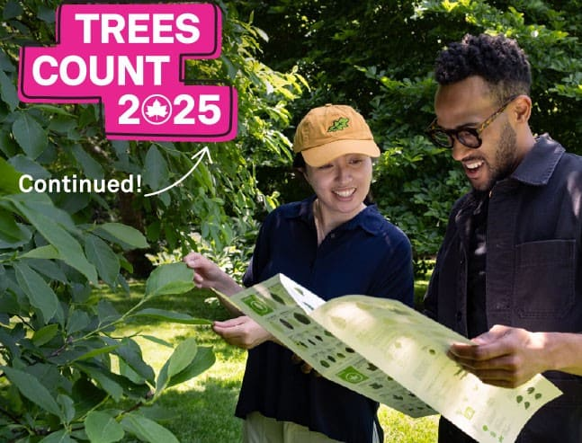
Trees Count!
A Community Effort to Understand NYC’s Trees
About Trees Count
Just like the U.S. Census helps us understand people, Trees Count helps us
understand the trees that grow in New York City.
Every ten years, many gather and count trees across all five boroughs.
Now, we’re looking for even more people to join us!
Are We Just Counting Trees?
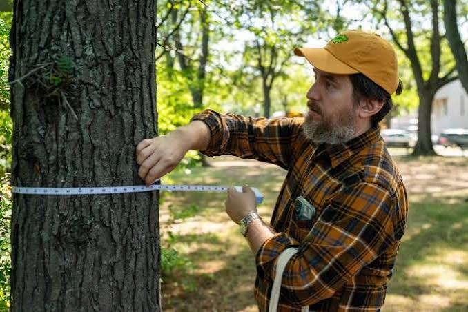
Trees Count is more than just counting trees. Volunteers and surveying technology collect information about individual trees, including:
- Location & Mapping - Where the tree is found.
- Species Identification - What kind of tree it is.
- Measurements - The size of the tree's trunk.
- Health Assessment - The tree's overall health and condition.
How NYC's Trees are Counted
Park Trees
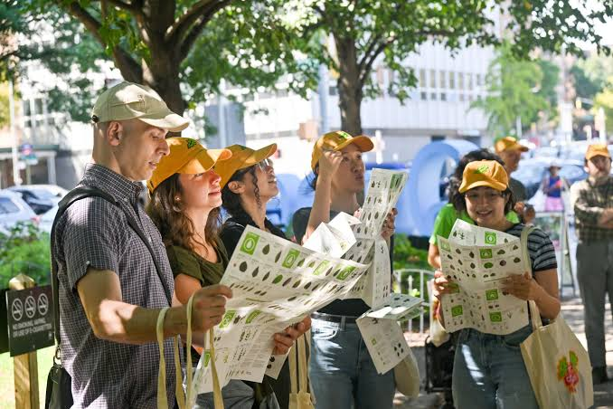
Volunteers count trees throughout NYC's parks. No experience needed. Look for beginner-friendly events!
Street Trees
LiDAR-equipped cars create 3D models of street trees. Then machine learning identifies each tree’s characteristics.
Why Count Trees?
Surveying NYC's trees helps us build healthier and safer communities.
Monitor Tree Health
Helping trees in our city thrive
Monitor Tree Health
Recording tree species, size, and condition helps NYC Parks plan tree care and maintenance.
Cooler, Greener Neighborhoods
Shade, cleaner air, thriving communities.
Cooler, Greener Neighborhoods
Survey data helps identify where trees can improve air quality, reduce urban heat, and support wildlife.
Safer Public Spaces
Looking out for our neighborhoods
Safer Public Spaces
Documenting potential hazards, such as dangling branches, helps NYC Parks identify trees that may need attention.
History & Impact
Since 1995, NYC tree censuses have helped us understand our urban forest and make better decisions about its care.
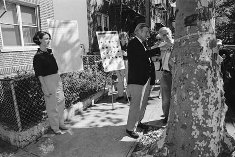
1995-1996 Tree Census
The first tree census provided information
on the number, size, and species of NYC street trees.
1995-1996 Tree Census
The first tree census provided information on the number, size, and species of NYC street trees.
A Discovery That Mattered
It alsoidentified more than 10,000 dead street trees, leading to a tree maintenance programand a commitment to remove dead trees within 30 days of a request.
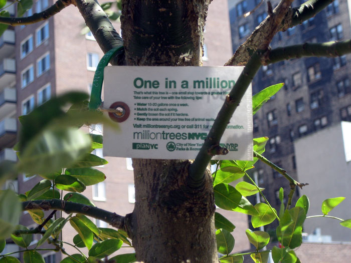
2005-2006 Tree Census
Data from this tree census helped estimate nearly
$122 million in annual environmental benefits.
2005-2006 Tree Census
Data from this tree census helped estimate nearly $122 million in annual environmental benefits.
The Impact of the Data
Benefits included improved air quality, energy savings, and reduced stormwater runoff. Thesefindings contributed to the launch of MillionTreesNYC.
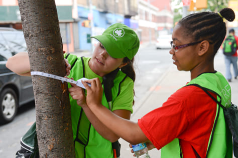
2015-2016 Tree Census
2,200+ volunteers participated in the largest
volunteer initiative in NYC Parks history.
2015-2016 Tree Census
2,200+ volunteers participated in the largest volunteer initiative in NYC Parks history.
What Volunteers Accomplished
Using survey tools and a dedicated app,volunteerscreated the first accurate digital inventory of street trees, whichhelped launch the New York City Tree Map.

2017-2018 Park Tree Inventory
NYC Parks conducted its first inventory of trees in
park areas, including playgrounds, lawns,
gardens, and other greenspaces.
2017-2018 Park Tree Inventory
NYC Parks conducted its first inventory of trees in park areas, including playgrounds, lawns, gardens, and other greenspaces.
Expanding the Tree Map
The inventory allowedpark treesto beadded in the New York City Tree Map, expanding NYC's tree data beyond street trees.
Our Community
Thousands of volunteers have come together to better understand and care for New York City's urban forest.
Here's what we've accomplished:
- 4,000+ volunteers welcomed
- 1000+ parks surveyed
- 145,000+ trees counted
Ready to count NYC’s trees?
Join our community and help us learn more about the trees that make New York City greener, healthier, and more vibrant.
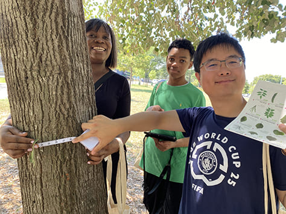
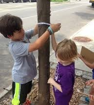
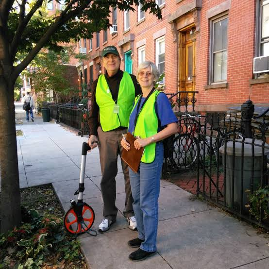
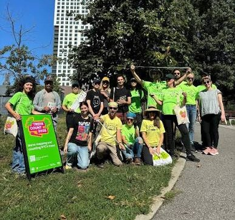
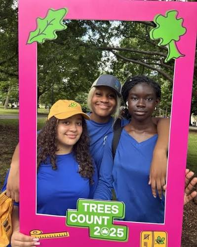
Learn More
Curious about NYC’s trees? Explore these resources to learn more.